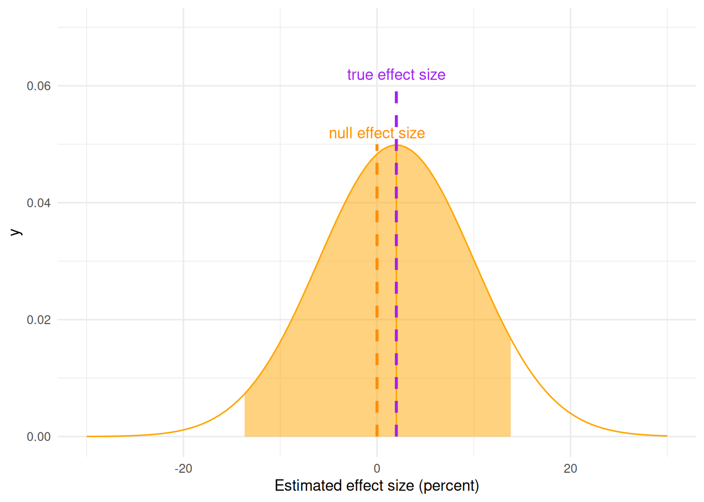
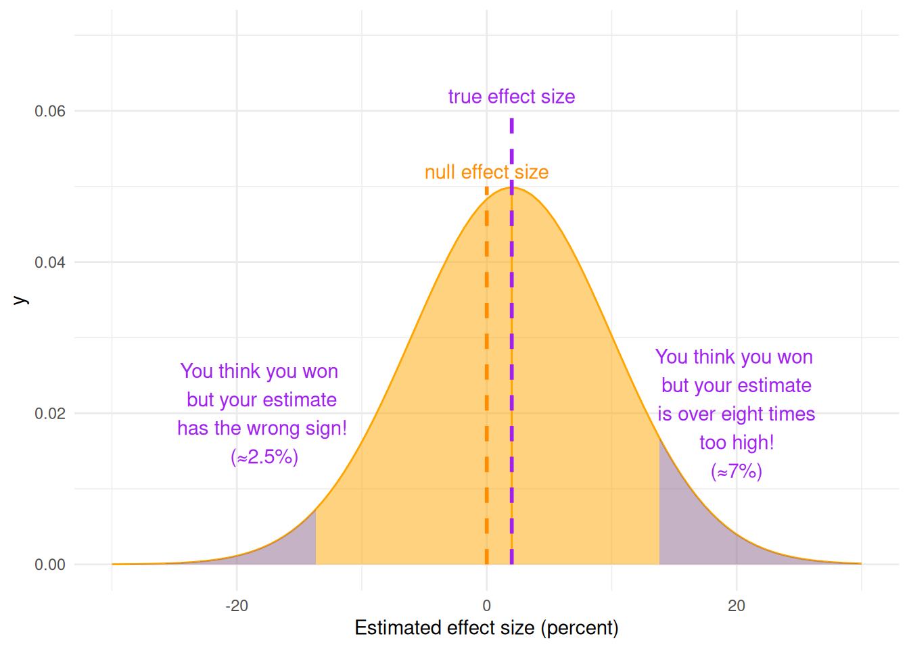

Attaching package: 'dplyr'The following objects are masked from 'package:stats':
filter, lagThe following objects are masked from 'package:base':
intersect, setdiff, setequal, unionLoading required package: ggplot2
Attaching package: 'dplyr'The following objects are masked from 'package:stats':
filter, lagThe following objects are masked from 'package:base':
intersect, setdiff, setequal, unionLoading required package: ggplot2Statistical power is defined as the probability, before a study is performed, that a particular comparison will achieve “statistical significance” at some predetermined level (e.g. \(P < 0.05\)) given an assumed true effect size.
# Shaded normal curve for the Winner's curse - a low-powered pilot study
# True effect size is 2%, SE=8
ggplot() +
shaded_normal(mu=2, sd=8, zstart=0.025, zend=0.93, xlabels=FALSE) +
add_x_marker(x=2, y=0.06, linecolor="purple", textcolor="purple", label="true effect size", textoffset=0.002) +
add_x_marker(x=0, y=0.05, linecolor="darkorange", textcolor="darkorange", label="null effect size", textoffset=0.002) +
xlim(-30, 30) +
xlab("Estimated effect size (percent)") +
theme_minimal()Warning: Using `size` aesthetic for lines was deprecated in ggplot2 3.4.0.
ℹ Please use `linewidth` instead.
To see what I mean, suppose that we ran a pilot study for a treatment where the true effect size was only a two percentage point increase in the outcome, but this effect is estimated with a standard error of about eight percentage points.
We test this against the null hypothesis that the effect size is zero
We set up the null hypothesis so that the result of the study is “positive”/“statistically significant” if the measured difference is more than two standard errors away from zero - i.e. outwith the orange shading of the curve
Even though the actual true mean effect is 2%, the larger standard error means that there is the possibility of the measured result falling outside that central shaded area
# Shaded normal curve for the Winner's curse - a low-powered pilot study
# True effect size is 2%, SE=8
ggplot() +
shaded_normal(mu=2, sd=8, zstart=0.025, zend=0.93, xlabels=FALSE) +
add_x_marker(x=2, y=0.06, linecolor="purple", textcolor="purple", label="true effect size", textoffset=0.002) +
add_x_marker(x=0, y=0.05, linecolor="darkorange", textcolor="darkorange", label="null effect size", textoffset=0.002) +
shade_normal(mu=2, sd=8, zstart=0.93, zend=1, xlabels=FALSE, fill="plum4") +
shade_normal(mu=2, sd=8, zstart=0.0, zend=0.025, xlabels=FALSE, fill="plum4") +
annotate("text", x=20, y=0.02, color="purple",
label=c("You think you won \n but your estimate \n is over eight times \n too high! \n (≈7%) ")) +
annotate("text", x=-18, y=0.02, color="purple",
label=c("You think you won \n but your estimate \n has the wrong sign! \n (≈2.5%)")) +
xlim(-30, 30) +
xlab("Estimated effect size (percent)") +
theme_minimal()Warning: Removed 400 rows containing non-finite outside the scale range
(`stat_align()`).
Any apparent success of low-powered studies masks larger failure
When signal (effect size) is low and noise (standard error) is high, “statistically significant” results are likely to be wrong.
Low-power studies tend not to replicate well
Low-power studies have essentially no chance of providing useful information
We can say this even before data are collected
Under-powered in vivo experiments waste time and resources, lead to unnecessary animal suffering and result in erroneous biological conclusions (NC3Rs Experimental Design Assistant guide)
Ethically, when working with animals we need to conduct a harm–benefit analysis to ensure the animal use is justified for the scientific gain. Experiments should be robust, not use more or fewer animals than necessary, and truly add to the knowledge base of science (@Karp2021-lc)
We often refer to two kinds of statistical error
Statistical power needs context: the expected error rates of the experiment at a given effect size, e.g.
The experiment has 80% power at \(\alpha = 0.05\) for an effect size of 2mM/L
The experiment has 80% power at \(\alpha = 0.05\) for an effect size of 2mM/L
We need this information to calculate an appropriate, ethical sample size
False positive rate \(\alpha = 0.05\)
Power \(1 - \beta = 0.8\) (80% power)
These are only a starting point - other values may be more appropriate depending on circumstance